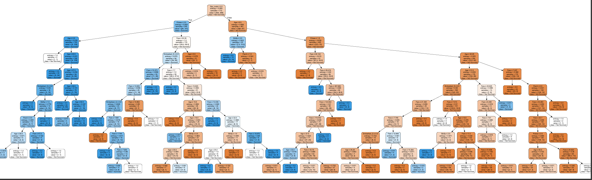
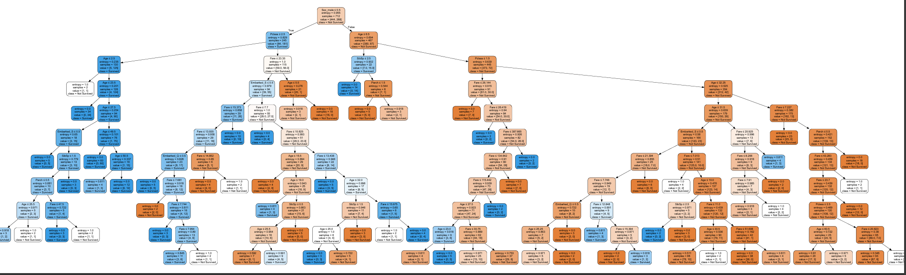
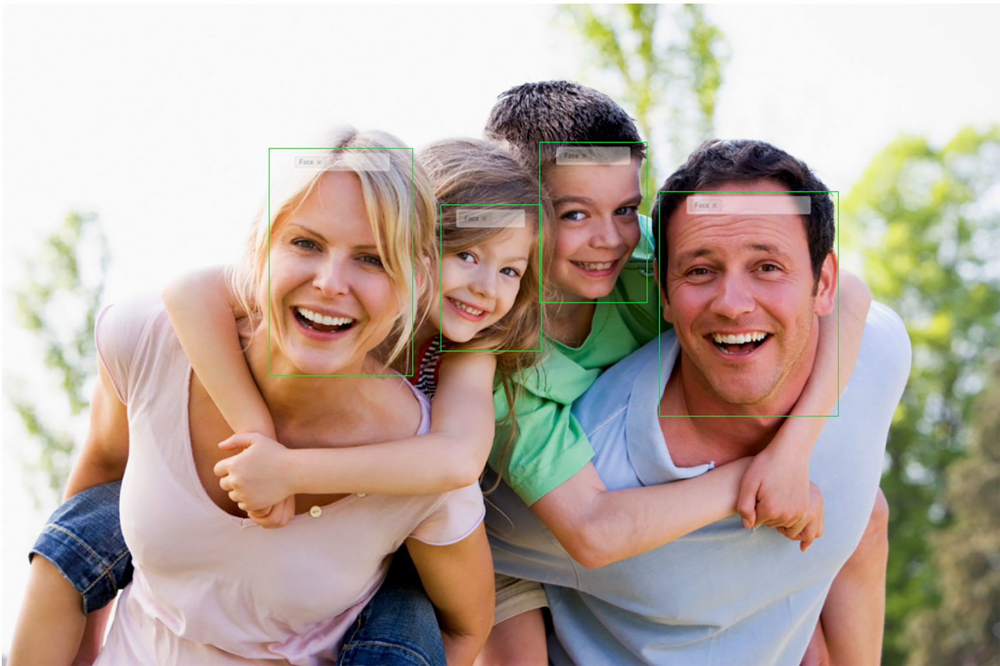

Profile
Hi, I'm Aashritha Sura an enthusiastic undergraduate student at VIT-AP.
I'm passionate about data science and business analytics and have completed a certified course in this domain. I’m currently diving deeper into machine learning and web development.
Beyond tech,I enjoy reading,writing and learning new languages always curious,always growing!
Back to homepageProjects
Here are a few exciting projects I'm currently working on or have completed recently.
Data Analytics Projects
Titanic Dataset - EDA & Feature Engineering
 

My first Kaggle competition submission! Performed comprehensive Exploratory Data Analysis and feature engineering on the Titanic dataset. Created visualizations to uncover patterns, handled missing data, and engineered new features to improve survival prediction accuracy.
View on Google ColabBusiness Analytics Project (Rinex Internship)
Analyzed multiple datasets using Python (Pandas, NumPy, Matplotlib, Seaborn). Performed data cleaning, created interactive visualizations, and derived actionable business insights with recommendations.
Linkedin ProfileFacial Gender Recognition using CNN (Planned Project)
Currently designing a convolutional neural network to classify gender from facial images. Planned implementation includes:
- Image preprocessing and augmentation techniques
- Model architecture design using TensorFlow/Keras
- Performance evaluation and optimization
- Goal of achieving high accuracy on test datasets
This project is in the planning/research phase.
Web Development Projects
Interactive Quiz Website
Developed a responsive quiz platform using HTML, CSS, and JavaScript. Features include:
- Multiple question types with randomization
- Timer and score tracking
Glamour Space Web Portal
A beauty-themed web portal featuring:
- Modern login interface with social authentication options
- Responsive dashboard with profile management
- Built with: HTML5, CSS3, JavaScript
Currently developing additional features including post creation and messaging system.
Game Development Projects
Tic-Tac-Toe Game (Python)
A classic two-player game featuring:
- Simple PyGame GUI
- Win/draw detection logic
- Score tracking across sessions
Snake Game (Python)
Classic Snake implementation with:
- Smooth keyboard controls
- Increasing difficulty levels
- High score tracking
Skills
Here are some of the skills I've developed over time:
Languages
Here are the languages I can communicate in:
Education
Vellore Institute of Technology - Andhra Pradesh
B.Tech in Computer Science and Engineering | 2023 – Present
Completed 2 years with a strong focus on programming languages like C,Python,Java, Data Structures,Object-Oriented Programming and Data Science.
Narayana Junior College - Hyderabad
Intermediate education | 2021 - 2023
Achieved 95% in Mathematics,94% in Chemistry and 90% in Physics.
Bhashyam High School - Hyderabad
Secondary education | 2021
Achieved 10 CGPA in 10th grade.
Certifications
- Data Science Certification from Rinex
- Fundamentals of Accelerated Computing with CUDA C/C++ from NVIDIA
- Fundamentals of Deep Learning from NVIDIA
- SQL Certification from HackerRank
- JavaScript Certification from HackerRank